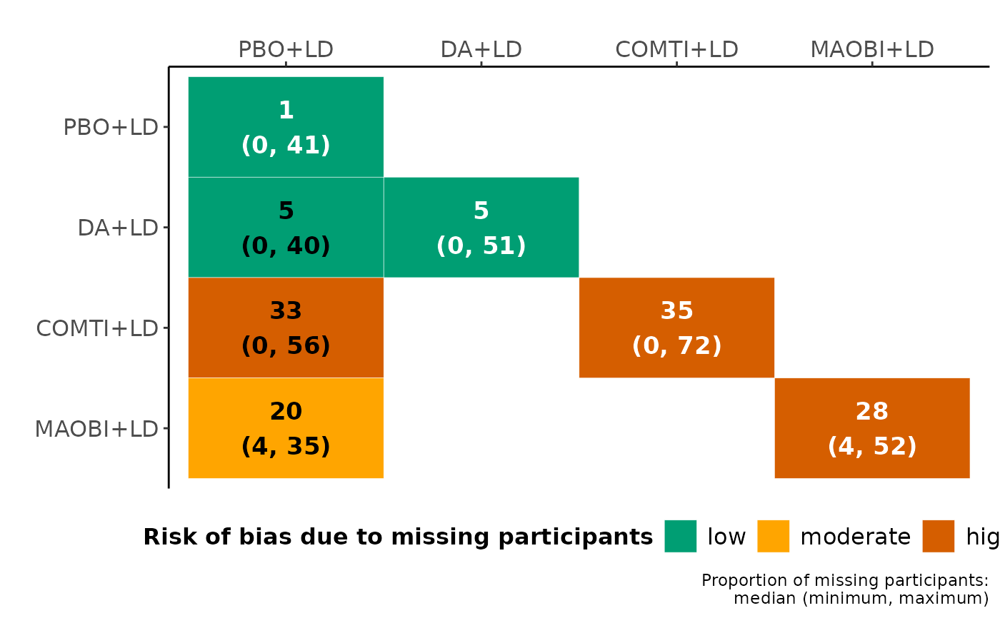

Heatmap of proportion of missing participants in the network
Source:R/heatmap.missing.network_function.R
heatmap_missing_network.RdIllustrates the distribution of missing participants and the associated risk of bias for each intervention and observed comparison in the network.
Arguments
- data
A data-frame of a one-trial-per-row format containing arm-level data of each trial. See 'Format' in
run_model.- drug_names
A vector of labels with the name of the interventions in the order they appear in the argument
data.
Value
A heatmap with the proportion of missing participants in each intervention and observed comparison in the network. Each cell annotates the median, minimum and maximum (the latter two in parenthesis) proportion of missing participants across the corresponding trials. The proportion of missing participants in each intervention and observed comparison are depicted in the main diagonal and lower off-diagonal with white and black colour, respectively. The pairwise comparisons are read from left to right.
The 'five-and-twenty' rule of Sackett and colleagues (1997) is used to characterise the median proportion of missing participants as being associated with low (up to 5%), moderate (more than 5% and up to 20%), and high risk of bias (more than 20%). Low, moderate, and high risk of bias associated with missing participants is indicated using green, orange, and red colour, respectively. If missing participants have not been reported for an intervention or comparison, the corresponding cell is indicated in grey.
The summary statistics (median, minimum and maximum) for each intervention (main diagonal; white font) result from calculating the proportion of missing participants in each arm of every trial and then summarising across the corresponding trial-arms. Similarly, the summary statistics for each observed comparison (lower off-diagonal; black font) result from calculating the proportion of total missing participants in each trial and then summarising across the corresponding trials.
heatmap_missing_network can be used only for a network of
interventions. Otherwise, the execution of the function will be stopped and
an error message will be printed on the R console. Likewise, when the
number of missing participants has not been extracted for any arm of the
trials.
References
Sackett DL, Richardson WS, Rosenberg WM, Haynes RB. Evidence-based medicine: how to practice and teach EBM. New York: Churchill Livingstone 1997. ISBN: 0-443-05686-2.
Examples
data("nma.stowe2011")
# Return the first six trials of the dataset
head(nma.stowe2011)
#> study t1 t2 y1 y2 sd1 sd2 m1 m2 n1 n2
#> 1 DA (B): Interntl 1 2 -0.30 -1.20 4.36 4.32 7 3 83 84
#> 2 DA (C): Spain 1 2 -2.47 -3.33 3.91 3.48 8 9 20 23
#> 3 DA (C): UK 1 2 -0.70 -2.00 2.24 2.33 2 1 18 19
#> 4 DA (C): USA 1 1 2 -0.77 -2.08 3.32 3.21 19 34 65 123
#> 5 DA (Pe): N America 1 2 -0.20 -1.80 4.79 4.81 0 0 187 189
#> 6 DA (Pr): CLEOPATRA 1 2 -0.90 -2.80 5.00 2.83 1 1 101 201
# The names of the interventions in the order they appear in the dataset
interv_names <- c("PBO+LD", "DA+LD", "COMTI+LD", "MAOBI+LD")
# Create the heatmap
heatmap_missing_network(data = nma.stowe2011,
drug_names = interv_names)
